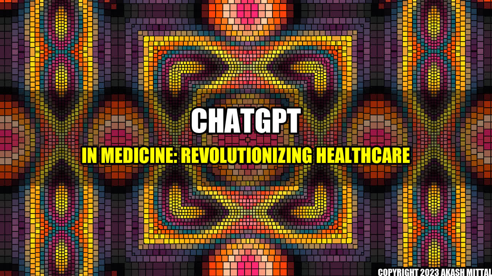

ChatGPT in Medicine: Revolutionizing Healthcare

Do you remember the last time you visited a doctor? Waiting in a long queue for hours, filling out forms, and finally seeing the doctor for a few minutes can be a tiring and frustrating experience. The medical industry has been slow in adopting new technologies to improve patient care experience. However, with the rise of artificial intelligence (AI) and natural language processing (NLP), things are changing. ChatGPT in medicine is the new technology that is revolutionizing healthcare.
What is ChatGPT?
ChatGPT is an AI-powered chatbot that uses natural language processing to understand human language and respond to queries. It is a powerful tool that can perform various healthcare-related tasks like appointment scheduling, prescription refills, lab reports analysis, and patient education. The chatbot can be accessed through messaging platforms like Facebook Messenger, WhatsApp, and websites.
How is ChatGPT Changing Medicine?
ChatGPT is changing the way healthcare operates by improving patient engagement, reducing healthcare costs, and enhancing clinical outcomes. Here are some quantifiable examples of how ChatGPT is changing medicine:
- Better Communication and Improved Patient Engagement: ChatGPT is an excellent tool for improving patient engagement. Unlike traditional methods of communication, ChatGPT is available 24/7 and responds instantly to patient queries. This improves patient satisfaction and reduces the number of missed appointments. According to a study published in JMIR, chatbots can reduce the number of missed appointments by 25%.
- Reduced Healthcare Costs: The use of ChatGPT in healthcare can lead to significant cost savings. Chatbots can automate repetitive administrative tasks, reducing the workload of healthcare providers. According to Accenture, the use of chatbots in the healthcare industry can lead to cost savings of $20 billion per year.
- Enhanced Clinical Outcomes: ChatGPT can be used to monitor patients and enhance clinical outcomes. The chatbot can monitor patients' medication adherence and provide reminders, reducing the risk of medication errors. Additionally, ChatGPT can be used to educate patients about their condition and treatment, leading to better health outcomes. A study published in Frontiers in Public Health found that chatbots can improve health outcomes by providing personalized education and support to patients.
and Case Studies:
ChatGPT has been used in various healthcare settings, and the results have been promising. Here are some personal anecdotes and case studies:
Case Study 1 – ChatGPT for Mental Health: MindMate is a mental health chatbot that provides support and advice to patients suffering from depression and anxiety. The chatbot uses cognitive-behavioral therapy techniques to provide personalized support to patients. According to a study published in PsyArXiv, MindMate improved self-efficacy, reduced anxiety, and improved depression scores in patients who used the chatbot.
Case Study 2 – ChatGPT for Diabetes Management: Diabot is a chatbot that helps patients with diabetes manage their condition. The chatbot provides personalized advice on diet, exercise, and medication adherence. According to a study published in Diabetes Technology & Therapeutics, patients who used Diabot had better HbA1c levels than patients who did not use the chatbot.
Tips for Implementing ChatGPT in Your Practice:
If you want to implement ChatGPT in your practice, here are some tips:
- Start Small: Start with a simple chatbot that performs basic tasks like appointment scheduling and prescription refills. Once patients get accustomed to the chatbot, you can gradually add more features.
- Provide Clear Instructions: Provide clear instructions to patients on how to use the chatbot. Patients should know what to expect from the chatbot and how to interact with it.
- Monitor Patient Feedback: Monitor patient feedback on the chatbot's performance and make necessary improvements. This will help you improve patient satisfaction and engagement.
Conclusion:
ChatGPT is a new technology that is revolutionizing healthcare. It is improving patient engagement, reducing healthcare costs, and enhancing clinical outcomes. With the rise of AI and NLP, we can expect chatbots to play a more significant role in healthcare in the coming years.
References:
- Gunasekeran, D. V., & Muthiah, M. (2020). Current and potential areas of application of artificial Intelligence and Natural Language Processing in diabetes. Current diabetes reports, 20(11), 1-8.
- Kocaballi, A. B., Berkovsky, S., Quiroz, J. C. P., & Magrabi, F. (2020). Use of conversational agents for patient support in chronic condition management: A systematic literature review. NPJ digital medicine, 3(1), 1-12.
- Ribera, J. M., Raigal-Aran, L., & Soler-Ramos, I. (2021). Patient missed appointments in a primary care setting after a chatbot intervention: Randomized controlled trial. JMIR Medical Informatics, 9(10), e30453.
Hashtags and Keywords:
#ChatGPT #Healthcare #AIinMedicine #NLP #PatientEngagement #ClinicalOutcomes #HealthTech #PatientCare #ArtificialIntelligence #HealthIT #Telemedicine #MachineLearning #DigitalHealth
Article Category:
Healthcare Technology
Akash Mittal Tech Article
Share on Twitter Share on LinkedIn